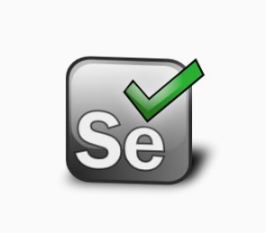
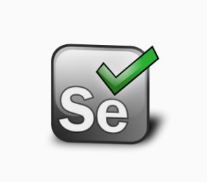
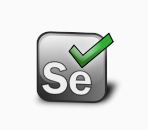

Installation guide
Tool set
 

Environment variables
->System variables
->User variables
->Path variable

->System variables
->User variables
->Path variable


------------------------------------------------------------------------------------------------------------------------
Step 3:After the jdk was downloaded, install it by clicking 'Next' until you get to the end of the installation when you'll need to click on 'Finish'

Step 4:After the installation has been done, you'll need to add the JDK path to system PATH environment variable
Step 5:Go to System properties by typing in the windows search bar 'Environment variables'

------------------------------------------------------------------------------------------------------------------------

------------------------------------------------------------------------------------------------------------------------
Step 4:Create and new env variable called JAVA_HOME pointing to the JDK path in the first section called 'User variables'


------------------------------------------------------------------------------------------------------------------------

Step 2:Install the application with the configuration needed
------------------------------------------------------------------------------------------------------------------------
Step 2:Create a new user environment variable called HOME, pointing to your user's home directory (C:\Users\username)
------------------------------------------------------------------------------------------------------------------------
Step 5:Configure GIT with commands

------------------------------------------------------------------------------------------------------------------------
Step 1:Register


Step 2:In order to download the jdk, you'll need to sign into the Oracle account or create a new account

------------------------------------------------------------------------------------------------------------------------
Step 6:Click on 'Environment variables'
Step 7:Click 'Path' row and then on 'Edit' button from 'System variables' section
Step 8:Click on 'New' button and enter the path of the installed jdk and at the end click on 'OK'

Step 9:After that, open a terminal and type 'java -version' in order to see that the jdk was installed.

------------------------------------------------------------------------------------------------------------------------
Step 2:Unzip to a directory of your choice
Step 3:Add the bin directory of the installation to PATH as for the JDK installation
------------------------------------------------------------------------------------------------------------------------
Step 5:Test the Maven installation with command 'mvn --version'

------------------------------------------------------------------------------------------------------------------------

------------------------------------------------------------------------------------------------------------------------
Step 3:Add the GIT install path to PATH environment variable
------------------------------------------------------------------------------------------------------------------------
Step 4:Test the GIT installation with command

------------------------------------------------------------------------------------------------------------------------
Step 2: Create a new repository (project)


------------------------------------------------------------------------------------------------------------------------
Step 3: Give developer permissions to my username (adim.moldovan)